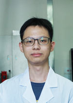

Associate Professor
Biomedical Engineeering
Shenzhen University
Address:
Rm 425, Bldg A2, Xili Campus, 1066 Xueyuan St., Shenzhen, China
Contact:

Academic Experience
Shenzhen University
Associate Professor, Department of Biomedical Engineering (2024-present)
Assistant Professor, Department of Biomedical Engineering (2018-2023)
University of Michigan, Ann Arbor
Ph.D., Department of Mechanical Engineering (2013-2018)
Advisor: Dr. Jianping Fu
University of Hong Kong
Research Assistant, Department of Mechanical Engineeering (2012-2013)
Advisor: Dr. Anderson Ho Cheung Shum
Tsinghua University
Exchange Student, Department of Aerospace Engineering (2010-2011)
University of Science and Technology of China
B.E., Department of Thermal Science and Energy Engineering (2008-2012)
Advisors: Dr. Liqun He, Dr. Haifeng Zhang
Selected Awards
Best Oral Presentation Award, CCS Conference on Analytical Chemistry (2023)
Best Paper Award, Shenzhen Association for Science and Technology (2023)
Baxter Young Investigator Award First-Tier, Baxter Healthcare Inc. (2016)
Departmental Fellowship, Mechanical Engineering, University of Michigan (2013-2014)
Provincial Honored Graduate, Department of Education, Anhui Province, China (2012)
National Scholarship, Ministry of Education, China (2011)
Graduate Students
Qi Fang
Master's student
Address: Bldg A2, Xili Campus
Email: 779574160 AT qq.com
Academic Training
B.S., Biomedical Engineering, Anhui Medical University (2018-2022))
Heng Zhai
Master's student
Address: Bldg A2, Xili Campus
Email: zhaiheng1998 AT outlook.com
Academic Training
B.S., Biomedical Engineering, Guangdong Medical University (2017-2021)
Wanjun Yao
Master's student
Address: Bldg A2, Xili Campus
Email: yaowanjun2000 AT 163.com
Academic Training
B.S., Electrical and Information Engineering, Zhejiang Sci-Tech University (2018-2022)
Jiazhao Chen
Master's student
Address: Bldg A2, Xili Campus
Email: cjz524611714 AT gmail.com
Academic Training
B.S., Biomedical Engineering, Shenzhen University (2019-2023)

Wenkai Fan
Master's student
Address: Bldg A2, Xili Campus
Email: 936418429 AT qq.com
Academic Training
B.S., Biomedical Engineering, Shenzhen University (2019-2023)
Undergraduate Students
Rui Deng
Undergrad student
Address: Bldg A2, Xili Campus
Email: XX
Academic Training
B.S., Biomedical Engineering, Shenzhen University (2021-present)
Alumni (Core members)
Meichi Jin
Master's student (2021-2024)
Thesis: Multiplex digital nucleic acid detection based on precipitation intensity grading
Current position: PhD student, Cornell University
Email: 2017222079 AT email.szu.edu.cn
Jingyi Ding
Master's student (2021-2024)
Thesis: Digital nucleic acid detection method and system based on polydisperse droplets
Current position: Equipment engineer, Peking University Shenzhen Hospital
Email: dingjy99 AT 163.com
Zhantao Zhao
Master's student (2021-2024)
Thesis: Image-stimulated ultra-microinjection system for single-cell analysis
Current position: System engineer, Huawei Technologies Co., Ltd.
Email: 840801648 AT qq.com
Donghao Li
Master's Student (2020-2023)
Thesis: Point-of-care blood coagulation assay based on digital microfluidics
Current position: Microfluidic engineer, Hangzhou TinkerBio
Email: 1459028206 AT qq.com
Kai Wu
Master's Student (2020-2023)
Thesis: Multiplex digital nucleic acid detection based on droplet pairing and color coding
Current position: Microfluidic engineer, Shenzhen YHLO Biotech
Email: wk13034005180 AT 163.com
Run Xie
Master's Student (2020-2023)
Thesis: High-throughput drug perturbation analysis based on droplet microfluidics and single-cell RNA sequencing
Current position: System engineer, Shenzhen YHLO Biotech
Email: run97999 AT 163.com
Linzhe Chen
Master's Student (2019-2022)
Thesis: Point-of-care testing based on droplet microfluidics
Current position: System engineer, Shenzhen Mai Ke Tian
Email: 18206692357 AT 163.com
Lanzhu Huang
Master's Student (2018-2021)
Thesis: Flexible Micropost Rings for High Throughput Testing of Clot Retraction Force
Current position: Research engineer, Shenzhen Pu Men
Email: huanglanzhu2018 AT email.szu.edu.cn
Tao Wang
Master's Student, co-advised by Prof. Qiaoliang Li (2020-2021)
Thesis: Single Cell Isolation Using Droplet-based Microfluidics
Current position: System engineer, Shenzhen Mai Ke Tian
Email: wtloveslife AT gmail.com
Nicolò (Nick) Simone Villa
PhD Candidate, co-advised by Prof. Tianfu Wang (2019-2020)
Current position: independent artist
Email: nicolos.villa AT gmail.com
Alumni (Undergrad researchers)
Yihan Xie
Final Year Project student, 2022-2023
Current position: System Engineer in a med-tech company
Yunzhu Wan
Final Year Project student, 2021-2022
Current position: Master's student at Sun Yat-sen University
Jieying Shan
Final Year Project student, 2021-2022
Current position: Master's student at SZU
Jinying Cai
Undergrad Research Assistant & Final Year Project student, 2019-2021
Current position: Master's student at SZU
Meichi Jin
Final Year Project student, 2020-2021
Current position: Master's student at ZidaLab at SZU
English | 中文